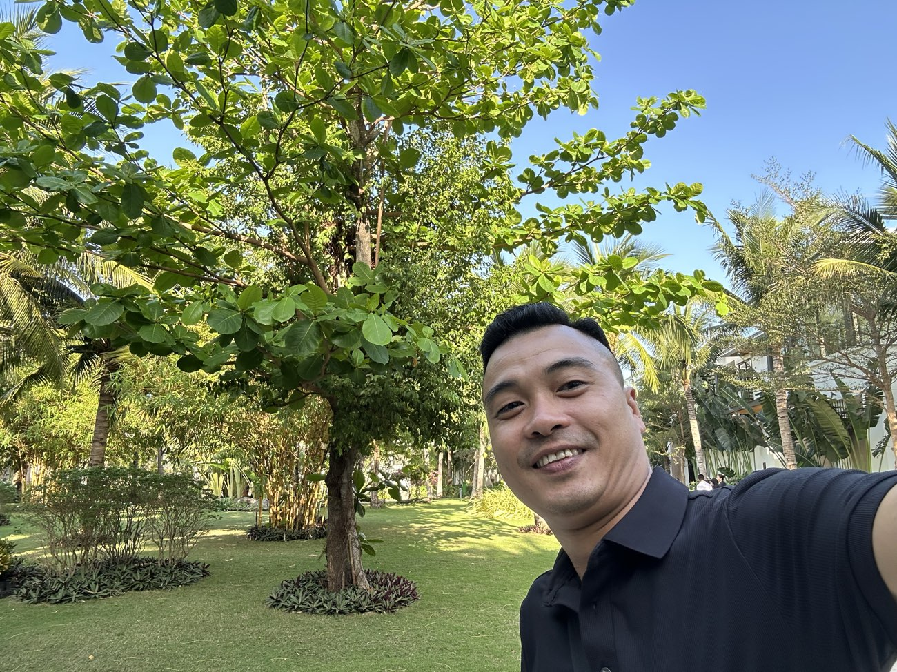

Điều chỉnh chủ trương đầu tư: dự án mở rộng 16 ha mà không được xây thêm căn nào — đọc quyết định thế nào
Tuần trước, một khu đô thị ở phía nam Nha Trang được điều chỉnh chủ trương đầu tư: diện tích tăng thêm 16,22 ha. Nghe "mở rộng" nhiều người nghĩ ngay tới thêm nhà, thêm lô, thêm sản phẩm. Đọc kỹ thì ngược lại: phần mở rộng không được xây gì cả. Bài này không bàn chuyện nên mua hay không — tôi dùng chính quyết định này làm ví dụ để chỉ cách đọc một tin "dự án được điều chỉnh".
Một công trường ven mặt nước ở phía nam Nha Trang, chụp từ bờ bên kia lúc chiều tối.
Quyết định ngày 16/11 nói gì
Theo VnExpress (17/11/2026), UBND tỉnh Khánh Hoà ban hành quyết định chấp thuận điều chỉnh chủ trương đầu tư dự án Khu đô thị hỗn hợp thành phố Nha Trang ngày 16/11/2026. Báo Người Quan Sát (18/11/2026) đưa cùng các con số. Tóm lại có bốn thay đổi:
- Diện tích: từ 226,71 ha lên 242,93 ha, tăng 16,22 ha.
- Phần tăng thêm: dùng để bồi thường, giải phóng mặt bằng, cải tạo và hoàn thiện không gian mặt nước — không được xây công trình, không được kinh doanh, khai thác thương mại, và phải bàn giao cho Nhà nước.
- Cơ cấu nhà ở: dự kiến 7.187 căn nhà ở thương mại và 1.500 căn nhà ở xã hội dạng chung cư, quỹ đất nhà ở xã hội khoảng 6,21 ha.
- Địa điểm: ghi lại theo tên đơn vị hành chính mới — phường Nam Nha Trang.
Để minh bạch: dự án này mang tên thương mại Charmora City, và tôi đang là môi giới tư vấn dự án này. Chính vì vậy, trong bài tôi chỉ dùng tên pháp lý, chỉ dẫn những gì báo đã đăng, và không nói chuyện giá hay chính sách bán hàng.
Câu 1: Phần mở rộng được làm gì — và bị cấm làm gì?
Đây là câu đầu tiên tôi đọc trong bất kỳ quyết định điều chỉnh nào. Diện tích tăng không đồng nghĩa với sản phẩm tăng. Ở ca này, văn bản nói rất rõ: phần 16,22 ha phải cải tạo thành mặt nước, đảm bảo tiêu thoát, khơi thông dòng chảy, chống ngập; và không được dùng làm căn cứ đề xuất tăng dân số, tăng sàn xây dựng, tăng số lượng sản phẩm (theo Người Quan Sát, 18/11/2026).
Với người mua, chi tiết này có hai mặt. Mặt tốt: một khoảng mặt nước được giữ lại, có thêm nhiệm vụ chống ngập được ghi thành trách nhiệm của chủ đầu tư. Mặt cần tỉnh táo: ai nói "dự án mở rộng nên sắp có thêm phân khu mới" là đang nói ngược với văn bản.

Câu 2: Chỉ tiêu nào đổi, chỉ tiêu nào giữ nguyên?
Câu thứ hai: trong quyết định, cái gì được ghi là không đổi? Ở đây, theo VnExpress, việc điều chỉnh cơ cấu sản phẩm không làm thay đổi quy mô dân số, tổng diện tích sàn xây dựng, các chỉ tiêu quy hoạch và hạ tầng kỹ thuật, xã hội đã được duyệt.
Đọc theo cách của người mua: dân số và tổng sàn giữ nguyên nghĩa là mật độ khu ở không tăng lên vì quyết định này. Còn cơ cấu "bao nhiêu căn thương mại, bao nhiêu căn nhà ở xã hội" là con số dự kiến — chữ này có trong chính bài báo. Khi so sánh với tài liệu bán hàng, hãy để ý con số nào là chỉ tiêu đã duyệt, con số nào là dự kiến có thể còn điều chỉnh.
Câu 3: Địa danh đổi thì hợp đồng và sổ ghi gì?
Từ khi sắp xếp đơn vị hành chính, rất nhiều dự án ở Khánh Hoà có địa chỉ "cũ" và "mới". Ở ca này, địa điểm trước đây ghi theo xã Vĩnh Thái và phường Phước Long cũ, nay ghi là phường Nam Nha Trang (theo bản tin tôi tổng hợp từ VnExpress 17/11/2026).
Việc đổi tên địa danh tự nó không làm thay đổi vị trí lô đất. Nhưng người mua nên kiểm ba chỗ cho khớp nhau: địa chỉ trên hợp đồng, địa chỉ trên các văn bản pháp lý của dự án, và cách cơ quan đăng ký đất đai sẽ ghi khi cấp giấy chứng nhận. Chỗ nào ghi khác thì hỏi lại cho rõ ngay từ đầu, đừng đợi đến lúc làm sổ.
Câu 4: Điều chỉnh chủ trương đầu tư trong trường hợp nào — và văn bản gốc ở đâu?
"Chủ trương đầu tư" là quyết định của cơ quan nhà nước cho phép một nhà đầu tư thực hiện dự án với mục tiêu, quy mô, địa điểm, tiến độ cụ thể. Khi những nội dung quan trọng đó thay đổi, dự án phải xin chấp thuận điều chỉnh, thường do chính cơ quan đã chấp thuận ban đầu xem xét. Luật Đầu tư 2025 (Luật số 143/2025/QH15) có hiệu lực từ 01/3/2026 và thay cho Luật Đầu tư 2020; luật mới cũng đã thu gọn một số trường hợp phải làm thủ tục này (theo Tạp chí Kinh tế Tài chính và VCCI). Danh sách cụ thể trường hợp nào phải xin điều chỉnh, anh/chị nên đọc trực tiếp văn bản luật hoặc hỏi luật sư.
Còn với người mua, câu quan trọng hơn là: quyết định số mấy, ngày nào, ai ký? Cả hai bài báo tôi đọc đều không nêu số hiệu quyết định. Vì vậy trong bài này tôi chỉ ghi "quyết định ngày 16/11/2026", chưa ghi số — tôi chưa đọc văn bản gốc. Đó cũng là việc tôi khuyên anh/chị làm: xin bản sao văn bản, đối chiếu với cổng thông tin của tỉnh, rồi mới tin. Tôi đã viết kỹ thói quen này ở bài "Đã có quy hoạch rồi anh ạ": hỏi lại quyết định số mấy, ngày nào.
Đọc tin "dự án được điều chỉnh" như một người mua
Tóm lại, mỗi lần thấy tin một dự án được mở rộng, nâng vốn hay điều chỉnh, tôi đọc theo bốn câu:
- Phần thay đổi được làm gì, bị cấm làm gì?
- Chỉ tiêu nào đổi, chỉ tiêu nào giữ nguyên, con số nào chỉ là dự kiến?
- Địa danh, tên gọi có đổi không — hợp đồng và văn bản có khớp không?
- Văn bản gốc số mấy, ngày nào, mình đã tận mắt đọc chưa?
Một tin tốt đọc vội có thể thành kỳ vọng sai. Một tin đọc kỹ thì dù tốt hay chưa tốt, mình vẫn biết mình đang đứng ở đâu. Cũng như chuyện phân biệt dự án đã có vốn, đang làm với dự án mới nằm trên giấy — đọc kỹ văn bản luôn rẻ hơn trả giá vì kỳ vọng.
Nguồn tham khảo
- Khu đô thị 17.000 tỷ đồng ở Nha Trang được mở rộng thêm 16,22 ha — VnExpress, 17/11/2026
- Khu đô thị hơn 17.000 tỷ tại Khánh Hòa có điều chỉnh mới — Người Quan Sát, 18/11/2026
- Luật Đầu tư 2025 chính thức có hiệu lực: khơi thông dòng chảy đầu tư — Tạp chí Kinh tế Tài chính, 02/2026
- Từ 1/3/2026, Luật Đầu tư 2025 có hiệu lực, trừ quy định về điều kiện kinh doanh — VCCI
- Luật Đầu tư số 143/2025/QH15 — Quốc hội ban hành, hiệu lực 01/3/2026
Bài viết chia sẻ cách đọc một quyết định hành chính dựa trên tin báo chí công khai; không phải tư vấn pháp lý hay khuyến nghị mua bán dự án nào. Tác giả hiện là môi giới tư vấn dự án được nhắc đến trong bài. Số liệu trích theo báo chí, chưa đối chiếu văn bản gốc; trước khi quyết định, anh/chị nên xem bản sao quyết định và hỏi luật sư khi cần.
"Rồi, ngày mới tốt lành nhé."
Sống tử tế · Kiếm tiền hạnh phúc · Cho đi giá trị
Đọc một quyết định dự án mà chưa chắc mình hiểu đúng?
Gửi tôi văn bản hoặc bài báo anh/chị đang đọc. Tôi giúp tách phần nào đã là quyết định, phần nào mới là dự kiến, và chỗ nào nên hỏi lại cơ quan có thẩm quyền. Miễn phí.
Nhắn Zalo — 0869 668 638